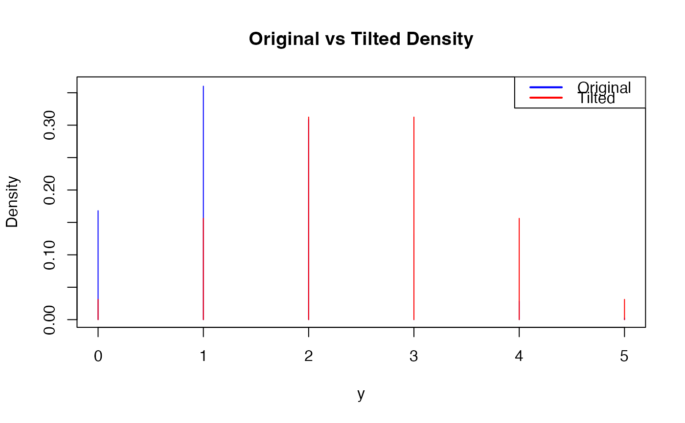
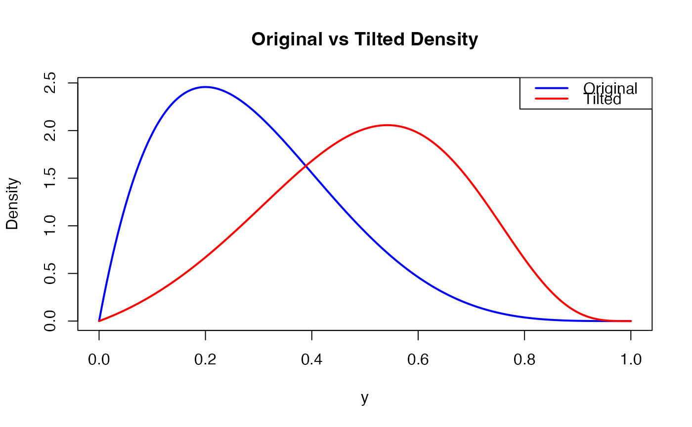

tilt_density.RdTilt a Base Density to Match a Target Mean
tilt_density(mu_theory, z_vals, f_y, discrete = FALSE)A list with components:
Numeric vector. Tilted and normalized density evaluated at z_values.
Numeric vector. Random samples drawn from the tilted density.
Numeric. Estimated exponential tilting parameter used.
The function searches for the tilting parameter nu that satisfies the
moment condition using a grid search followed by uniroot to refine the
solution. If no sign change is detected in the moment condition, no tilting
is applied (i.e., nu = 0). The method is suitable for discrete or bounded
densities and can be used for post-hoc adjustment in hierarchical
probabilistic forecasting.
# Example: tilt a simple discrete density
y <- 0:5
f <- dbinom(y, size = 5, prob = 0.3) # E(Y) = 5*0.3 = 1.5
mu_target <- 2.5
res <- tilt_density(mu_theory = mu_target,
z_vals = y,
f_y = f, discrete=TRUE)
plot(y, f, col = "blue", type='h',
main = "Original vs Tilted Density",
xlab = "y", ylab = "Density")
lines(y, res$f_tilted, col = "red", type='h')
legend("topright", legend = c("Original", "Tilted"),
col = c("blue", "red"), lwd = 2)

# Example: tilt a simple continuous density
y <- seq(0, 1, length.out = 200)
f <- dbeta(y, shape1 = 2, shape2 = 5) # E(Y) = 2/(2+5) = 0.2857
mu_target <- 0.5
res <- tilt_density(mu_theory = mu_target,
z_vals = y,
f_y = f,
discrete = FALSE)
plot(y, f, type = "l", col = "blue", lwd = 2,
main = "Original vs Tilted Density",
xlab = "y", ylab = "Density")
lines(y, res$f_tilted, col = "red", lwd = 2)
legend("topright", legend = c("Original", "Tilted"),
col = c("blue", "red"), lwd = 2)
